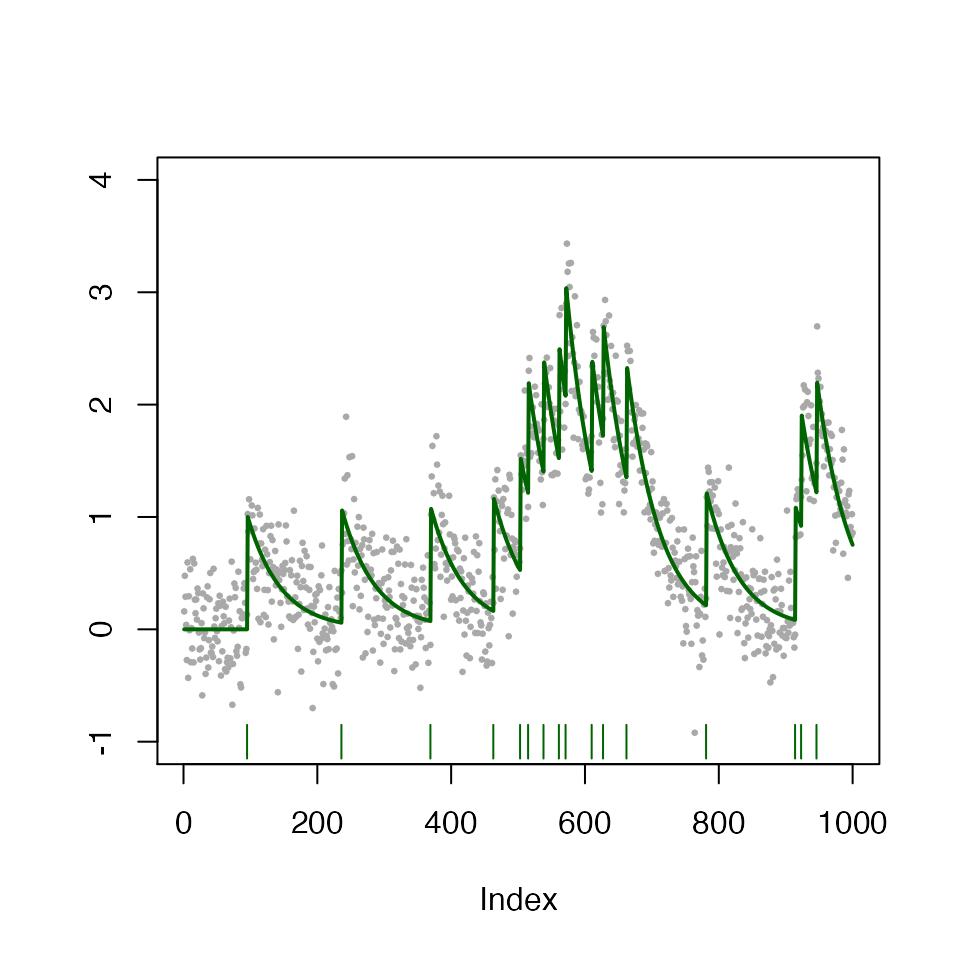
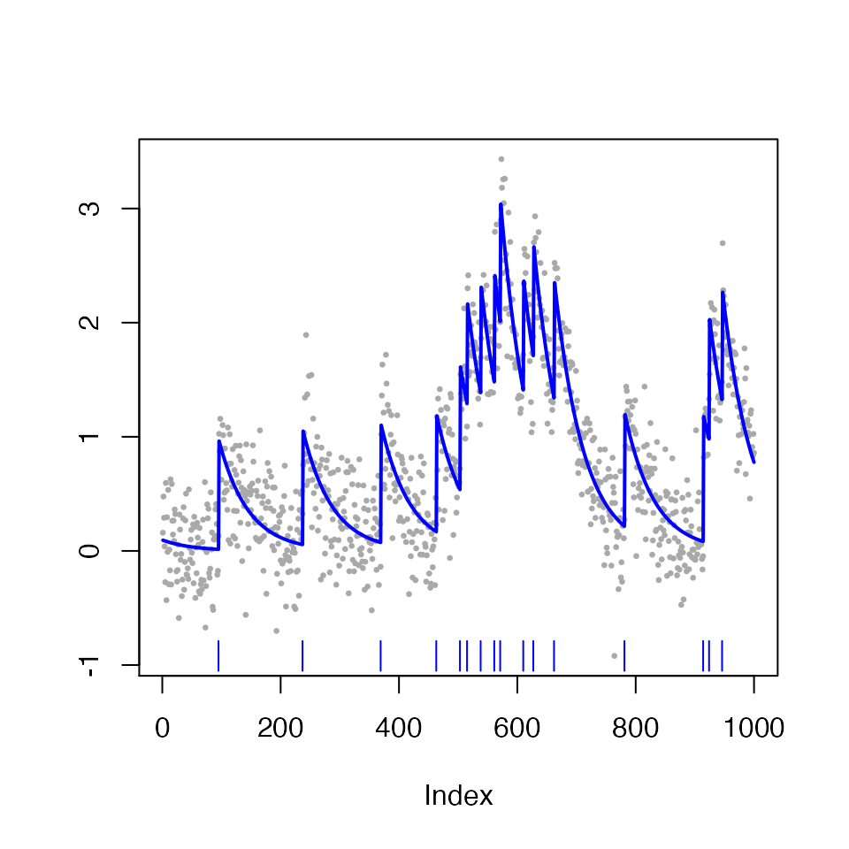

Tutorials.RmdIn this tutorial, we demonstrate basic use of the SpikeInference package.
First load the pacakge:
require(SpikeInference)
#> Loading required package: SpikeInferenceTo illustrate the use, we will first simulate from a AR-1 model for calcium imaging data according to \[Y_t = c_t + \epsilon_t, \epsilon_t \sim N(0, \sigma^2),\] where \[c_t = \gamma c_{t-1} + z_t, z_t\geq 0\]. We will use \(\sigma = 0.1, \gamma = 0.98, z_t \overset{i.i.d.}{\sim}\text{Poisson}(0.01)\) for this particular example.
gam <- 0.98
sigma <- 0.3
n_length <- 1000
curr_sim <- simulate_ar1(n = n_length, gam = gam, poisMean = 0.01, sd = sigma, seed = 2)
plot(curr_sim)
We estimate spikes using an \(\ell_0\) penalty with tuning parameter \(\lambda=4\):
LAMBDA <- 0.7
fit_spike <- spike_estimates(dat = curr_sim$fl, decay_rate = gam,
tuning_parameter = LAMBDA,
functional_pruning_out = FALSE)
plot(fit_spike)
The fit_spike object contains spike fit information:
str(fit_spike)
#> List of 13
#> $ estimated_means : num [1:1000] 0.0941 0.0922 0.0903 0.0885 0.0868 ...
#> $ estimated_calcium : num [1:1000] 0.0941 0.0922 0.0903 0.0885 0.0868 ...
#> $ dat : num [1:1000] 0.1594 0.4764 0.2904 0.0397 -0.2737 ...
#> $ decay_rate : num 0.98
#> $ change_pts : num [1:16] 95 237 369 463 503 515 538 561 571 610 ...
#> $ spikes : num [1:16] 95 237 369 463 503 515 538 561 571 610 ...
#> $ call : language spike_estimates(dat = curr_sim$fl, decay_rate = gam, tuning_parameter = LAMBDA, functional_pruning_out = FALSE)
#> $ tuning_parameter : num 0.7
#> $ cost : num [1:1000] 0 0.0261 0.0262 0.0513 0.155 ...
#> $ n_intervals : int [1:1000] 1 2 2 2 2 2 3 2 2 2 ...
#> $ end_vec : num [1:1000] 946 946 946 946 946 946 946 946 946 946 ...
#> $ piecewise_square_losses: NULL
#> $ spike_sign : chr [1:16] "Positive" "Positive" "Positive" "Positive" ...
#> - attr(*, "class")= chr "spike_estimates"Importantly, the first five estimated spike locations are:
(fit_spike$spikes)[1:5]
#> [1] 95 237 369 463 503In this section we demonstrate how to use our software to obtain p-values and confidence intervals for estimated spikes with 2 different window size h (1 and 10); for displaying purposes, we will only consider the first five estimated spikes.
Recall that the p-values we are interested in have the form \[\mathbb{P}\left(\phi \geq \nu^\top y \middle | \phi \in \mathcal{S}\cap(0,\infty)\right)\], for a given \(\nu\).
h <- 1
inference_spike_toy_example_h_1 <- spike_inference(dat = curr_sim$fl, decay_rate = gam,
tuning_parameter = LAMBDA, window_size = h,
sig = sigma*sigma, return_conditioning_sets = FALSE,return_ci = TRUE,lower_trunc=0)
knitr::kable(data.frame(estimated_spikes = inference_spike_toy_example_h_1$spikes[1:5],
pvals = inference_spike_toy_example_h_1$pvals[1:5],
LCB = inference_spike_toy_example_h_1$LCB[1:5],
UCB = inference_spike_toy_example_h_1$UCB[1:5]))| estimated_spikes | pvals | LCB | UCB |
|---|---|---|---|
| 95 | 0.0502840 | -0.2054604 | 1.718220 |
| 237 | 0.3250973 | -1.3097010 | 1.244250 |
| 369 | 0.0122021 | 0.1744081 | 1.980777 |
| 463 | 0.0285364 | -0.0326266 | 1.767183 |
| 503 | 0.0648997 | -0.2931876 | 1.663233 |
h <- 10
inference_spike_toy_example_h_10 <- spike_inference(dat = curr_sim$fl, decay_rate = gam,
tuning_parameter = LAMBDA, window_size = h,
sig = sigma*sigma, return_conditioning_sets = FALSE,return_ci = TRUE,lower_trunc=0)
knitr::kable(data.frame(estimated_spikes = inference_spike_toy_example_h_10$spikes[1:5],
pvals = inference_spike_toy_example_h_10$pvals[1:5],
LCB = inference_spike_toy_example_h_10$LCB[1:5],
UCB = inference_spike_toy_example_h_10$UCB[1:5]))| estimated_spikes | pvals | LCB | UCB |
|---|---|---|---|
| 95 | 0.0e+00 | 0.6245171 | 1.149908 |
| 237 | 6.6e-06 | 0.6072524 | 1.191240 |
| 369 | 0.0e+00 | 0.8515320 | 1.375928 |
| 463 | 0.0e+00 | 0.8101850 | 1.337582 |
| 503 | 0.0e+00 | 0.7885913 | 1.313689 |
We see the drastic change in p-values (power) for a larger h!